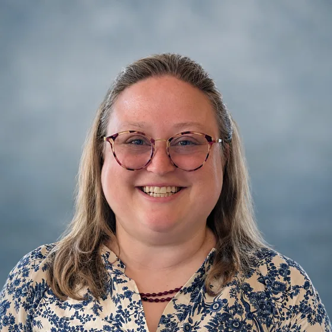
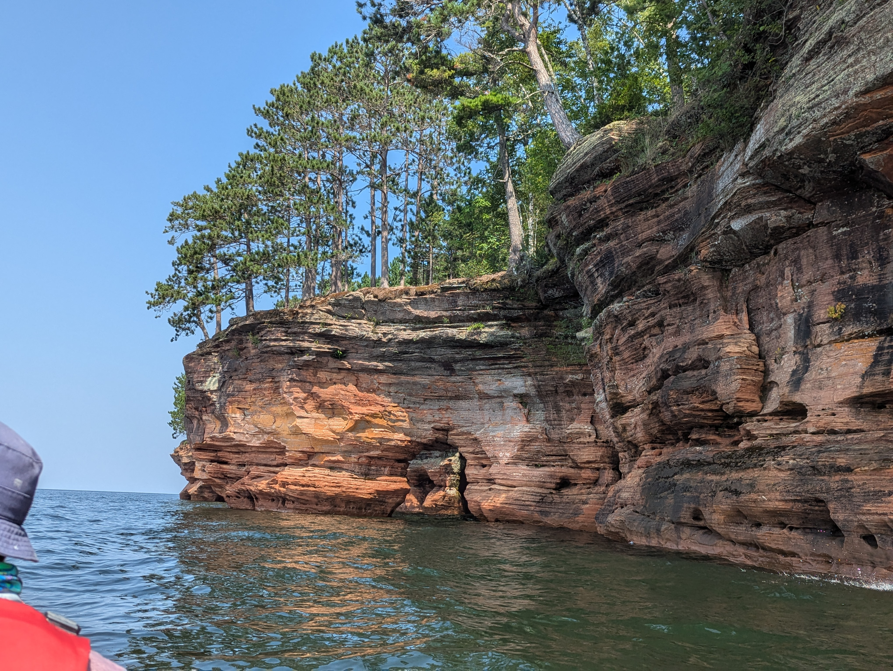
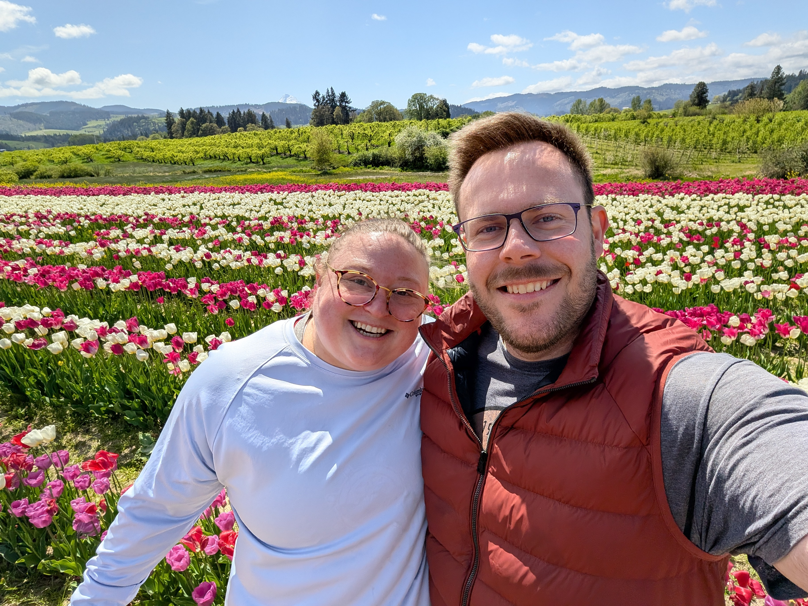

Research & Inquiry
Formulating meaningful questions, investigating evidence, and connecting findings to real-world contexts.
Learn more about my background, how I approach analytical challenges, and the values that guide my work.

I studied biology at Lewis & Clark College, where I developed a strong foundation in science, the humanities, and critical thinking. Through undergraduate fieldwork and my experience as an AmeriCorps member, I discovered a passion for conservation, water quality, and environmental restoration. These experiences also strengthened my belief in the importance of environmental education and empowering communities to become stewards of their natural resources.
My master’s in teaching deepened my research skills and provided experience collecting and analyzing qualitative and quantitative data. As a science teacher, I tracked student data throughout each school year and shared findings with students, families, and school leaders. I used these analyses to continuously evaluate and improve my educational programs, adjusting instruction and support strategies to improve student outcomes.
I value collaboration with peers, stakeholders, and clients. I bring creativity and critical thinking to my work while remaining open to different perspectives, listening to others, and building on new ideas.
As a data analyst, I strive to ask meaningful questions and produce insights aligned with specific goals. I use Python, SQL, Tableau, and Excel to identify trends, investigate patterns, and communicate findings across diverse datasets, including real estate, e-commerce, and water quality. My goal is to transform complex information into clear, meaningful insights that help organizations make informed decisions and create positive change.
I grew up in a small town on Lake Superior, surrounded by forests and water, where my childhood adventures inspired a lifelong love of nature, science, and conservation. Today, I live in Portland with my husband, our two dogs, Calvin and Hobbes, and our cats, Han and Leia. I love hiking, gardening, reading, board games, Dungeons & Dragons, and exploring Portland’s restaurants and neighborhoods. I’m also a third-generation potter, and growing up in a family of artists has shaped the creativity, curiosity, and love of experimentation I bring to everything I do.


.jpg)
Combining scientific inquiry, analytical methods, and creative problem-solving to turn data into meaningful insights.
Formulating meaningful questions, investigating evidence, and connecting findings to real-world contexts.
I explore distributions, test hypotheses, and interpret relationships using Python, NumPy, and statistical methods.
Creating interactive dashboards with Tableau and Excel to communicate patterns, explain findings, and support informed decisions.
Using Python, pandas, and SQL to extract, clean, transform, and analyze datasets, turning raw information into structured, usable data.
Understanding audience needs, collaborating with others, and aligning analysis with meaningful questions and goals.
Challenging assumptions, evaluating limitations, and interpreting evidence from multiple perspectives.
I'm motivated by opportunities to use data, science, and creative thinking to address challenges that affect human health, our communities, and the natural world.
Supporting responsible management of natural resources through scientific understanding and evidence-based decisions.
Using data to better understand disparities, evaluate outcomes, and support equitable opportunities for communities.
Contributing to solutions that address climate change, promote sustainability, and strengthen long-term resilience.
Protecting ecosystems, wildlife, and biodiversity through research, conservation, and informed resource management.
Advancing understanding of healthcare, preventive care, mental health, and diabetes education to support informed decisions and healthier communities.
Combining scientific inquiry, critical thinking, and creativity to solve complex problems and develop meaningful, data-informed solutions.